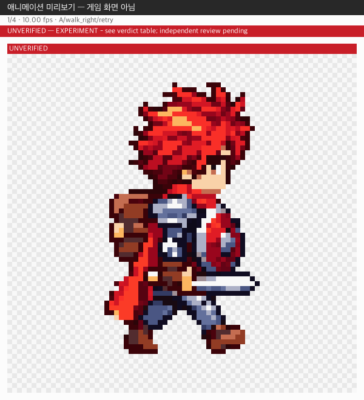
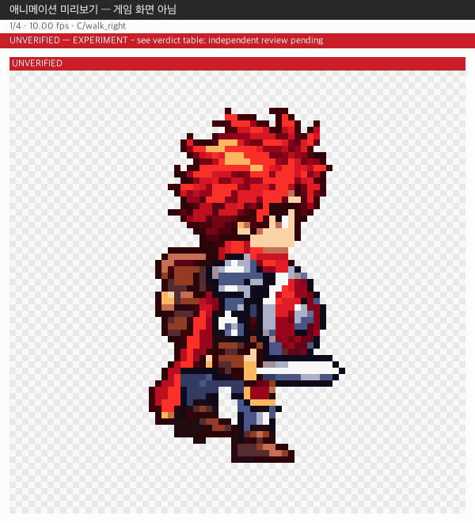
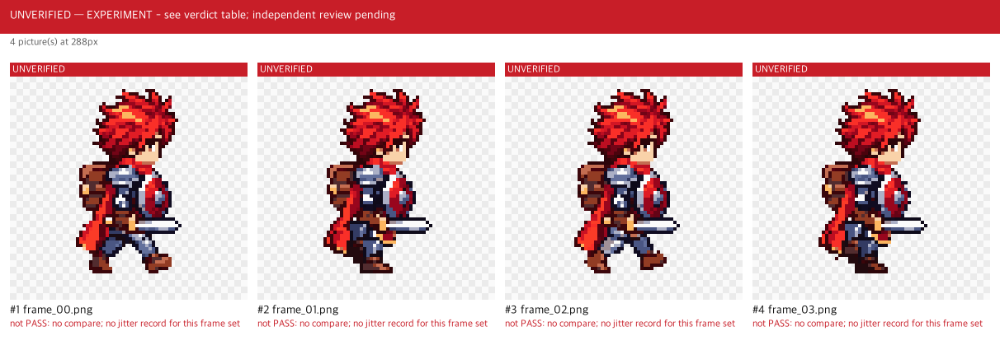
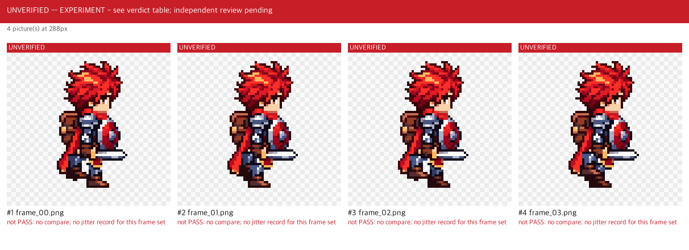

Codex로 전사 걷기·공격을 뽑아 본 결과
Claude 1차 독립 판독: A 정면 걷기·B 오른쪽 걷기·B 공격은 PASS입니다. 다리 교대와 공격 자세는 만들 수 있었습니다. 소량 시안과 손질 출발점으로는 B가 낫지만, 40클립을 이대로 만들기에는 품질이 불안정합니다. 나머지 여섯 묶음은 수정 후 재판독 대기입니다. 사용자 채택은 아직 하지 않았습니다.
게임에 넣지 않은 별도 시험입니다. 내장 이미지 생성 17회, Aether·Tripo 0회. 아래의 빨간 띠는 검증·채택되지 않은 시험이라는 표시이며 실패본도 그대로 실었습니다. 예전 그림은 동작 박자만 비교합니다.
오른쪽 걷기 · 방법 B 독립 판독 PASS
Claude 독립 판독 PASS. 그림·재생 파일을 바꾸지 않고 판정을 이어 갑니다. 작은 흠은 리뷰 기록에 남겼습니다.
 새 동작 · 8배 · 10fps · 0.4초 반복
새 동작 · 8배 · 10fps · 0.4초 반복 프레임 줄 · 4배 · 눌러 크게 보기
프레임 줄 · 4배 · 눌러 크게 보기 예전 같은 동작 · 10fps · 박자 참고용
예전 같은 동작 · 10fps · 박자 참고용4배 재생 · 완성 GIF에서 꺼낸 첫 장 · 구멍 검사 기록
정면 걷기 · 방법 A 독립 판독 PASS
Claude 독립 판독 PASS. 그림·재생 파일을 바꾸지 않고 판정을 이어 갑니다. 작은 흠은 리뷰 기록에 남겼습니다.
 새 동작 · 8배 · 10fps · 0.4초 반복
새 동작 · 8배 · 10fps · 0.4초 반복 프레임 줄 · 4배 · 눌러 크게 보기
프레임 줄 · 4배 · 눌러 크게 보기 예전 같은 동작 · 10fps · 박자 참고용
예전 같은 동작 · 10fps · 박자 참고용4배 재생 · 완성 GIF에서 꺼낸 첫 장 · 구멍 검사 기록
오른쪽 칼 공격 · 방법 B 독립 판독 PASS
Claude 독립 판독 PASS. 그림·재생 파일을 바꾸지 않고 판정을 이어 갑니다. 작은 흠은 리뷰 기록에 남겼습니다.
 새 동작 · 8배 · 10fps · 0.4초 반복
새 동작 · 8배 · 10fps · 0.4초 반복 프레임 줄 · 4배 · 눌러 크게 보기
프레임 줄 · 4배 · 눌러 크게 보기 예전 같은 동작 · 10fps · 박자 참고용
예전 같은 동작 · 10fps · 박자 참고용4배 재생 · 완성 GIF에서 꺼낸 첫 장 · 구멍 검사 기록
같은 오른쪽 걷기 · A/B/C 비교
방법 A

이전 FAIL을 원본 픽셀 조각으로 수정했습니다. 수정 후 독립 재판독 대기입니다. set01: restore full connected thigh/shin/boot in frames01/03; retain generated contact frames00/02방법 B
Claude 독립 판독 PASS. 그림·재생 파일을 바꾸지 않고 판정을 이어 갑니다. 작은 흠은 리뷰 기록에 남겼습니다.방법 C

이전 FAIL을 원본 픽셀 조각으로 수정했습니다. 수정 후 독립 재판독 대기입니다. set07: correct complete shin/boot cut; exclude source hand; stronger stride ±4/5 and lifted heel 4/5px, dark far boot첫 시도의 실패도 보기
A·B 첫 묶음은 1·3장에서 같은 다리가 앞이었습니다. A는 지시를 강화했고, B는 색 막대에 실제 픽셀 자세 러프를 더해 3장째만 다시 생성했습니다. C는 조각 연결과 색 구분을 바꿨습니다.
방법별 비용과 남은 문제 · 아래 비용 표는 최초 시험 기록
리뷰 원문 판정과 수정 항목 · 수정 확인 브리핑
최초 생성 17회에서 추가 생성은 없습니다. A 정면·B 오른쪽·B 공격은 독립 판독 PASS, 나머지는 픽셀 손질 뒤 재판독 대기입니다. 최초 실패본은 review-r1/before/에 보존했습니다.
시간은 이 시험의 병행 실행 구간입니다. 준비·손질·판독 시간이 겹쳐 서로 더하면 전체 시간이 되지 않습니다. 세부 시각은 기록 파일을 따릅니다.
추천: 조금 더 손질할 자세 시안은 B. 빠르게 동작 모양만 보는 데는 A. C는 작은 발 움직임에 한정하는 편이 낫습니다. 이번에는 Aether를 시험하지 않았으므로 Aether와의 품질·시간 우열은 알 수 없습니다.
어느 다리가 앞인가 · 제작자가 GIF를 풀어 순서대로 본 기록
| 방법·동작 | 1장 | 2장 | 3장 | 4장 |
|---|
| A/walk_right/retry | 가까운 다리 | 가까운 다리 접지·통과 | 먼 다리 | 먼 다리 접지·통과 |
| A/walk_down | 화면 왼발 | 왼발 접지·통과 | 화면 오른발 | 오른발 접지·통과 |
| B/walk_right | 가까운 다리 | 다리 통과·뒤꿈치 연결(Claude PASS) | 먼 다리 | 다리 통과·뒤꿈치 연결(Claude PASS) |
| B/walk_down | 화면 왼발 | 왼발 접지·통과 | 화면 오른발 | 오른발 접지·통과 |
| C/walk_right | 가까운 다리 | 가까운 다리 접지·통과 | 먼 다리 | 먼 다리 접지·통과 |
| C/walk_down | 화면 왼발 | 왼발 접지·통과 | 화면 오른발 | 오른발 접지·통과 |
앞다리는 접촉 자세 1·3장으로, 중간 장은 접지·통과 상태로 구분했습니다. B 오른쪽의 4장째는 Claude가 뒤꿈치가 붙어 있는 통과 자세로 읽어 PASS했습니다.
프레임 간 크기와 색
원본 PNG 36장은 모두 72×72, 키 56, 바닥선 64, 반투명 0, 기준 팔레트 밖 색 0입니다. 머리의 원본 불투명 칸은 모두 그대로입니다. 아래는 칸 단위 실측이며, 몸통은 [30,31,41,46] 비교 창, 방패는 빨간 면, 칼은 밝은 날의 범위입니다. 물건 전체 크기·자연스러움을 대신하는 검사가 아닙니다. 특히 공격은 팔이 몸통 앞을 지나갑니다.
36장 실측 표 펼치기
바닥 부근 중심은 y61~63의 불투명 칸 범위입니다. 반 칸 값은 정수 격자에서 폭이 짝수인 경우이며, C 공격 3장째는 내려간 칼이 발 범위와 섞여 38.5로 잡힙니다. 발 뿌리 위치와 혼동하지 않았습니다. 생성 격자 추정은 LOW·GRID_MISMATCH가 있어 원본·기록을 남겼으며 정규 생산 PASS로 승격하지 않았습니다. pixelcheck.py가 없어 motion 검사와 dot_retouch.py는 사용할 수 없었습니다.
40클립으로 늘리면 · 추정
대원 4명 × 5방향 × 걷기·공격 = 40클립. 이번 세 동작만 바탕으로 한 계산이며 품질 통과를 보장하지 않습니다. 자동 생성보다 프레임별 확인·손질이 더 큰 변수가 됩니다.
| 방법 | 생성 횟수 추정 | 생성·손질·확인 시간 추정 | 계산 근거 |
|---|
| A | 약 54회 (최소 40회) | 약 7~13시간 | 이번 4÷3×40을 올림. 클립당 손질·확인 포함 10~20분 가정. |
| B | 약 174회 (4장씩이면 최소 160회) | 약 10~20시간 | 이번 13÷3×40을 올림. 클립당 손질·확인 포함 15~30분 가정. |
| C | 0회 | 약 7~17시간 | 방향·인물별 부위 나누기와 조립·확인에 클립당 10~25분 가정. 자연스러움을 올리려면 더 걸림. |
범위는 병행 생성으로 줄어드는 대기와 수작업으로 늘어나는 시간을 함께 고려한 계획용 추정입니다. Aether 크레딧이나 비용으로 환산하지 않았습니다.
각 방법의 나머지 동작도 보기
오른쪽 걷기 · 방법 A 수정본 · 재판독 대기
이전 FAIL을 원본 픽셀 조각으로 수정했습니다. 수정 후 독립 재판독 대기입니다. set01: restore full connected thigh/shin/boot in frames01/03; retain generated contact frames00/02
새 동작 · 8배 · 10fps · 0.4초 반복
프레임 줄 · 4배 · 눌러 크게 보기예전 같은 동작 · 10fps · 박자 참고용 4배 재생 · 완성 GIF에서 꺼낸 첫 장 · 구멍 검사 기록
오른쪽 칼 공격 · 방법 A 수정본 · 재판독 대기
이전 FAIL을 원본 픽셀 조각으로 수정했습니다. 수정 후 독립 재판독 대기입니다. set03: source sword outside head silhouette in wind-up; remove old black dot and connect raised arm
4배 재생 · 완성 GIF에서 꺼낸 첫 장 · 구멍 검사 기록
정면 걷기 · 방법 B 수정본 · 재판독 대기
이전 FAIL을 원본 픽셀 조각으로 수정했습니다. 수정 후 독립 재판독 대기입니다. set05: replace full left forearm/weapon envelope, including generated fragments outside former narrow patch
4배 재생 · 완성 GIF에서 꺼낸 첫 장 · 구멍 검사 기록
오른쪽 걷기 · 방법 C 수정본 · 재판독 대기
이전 FAIL을 원본 픽셀 조각으로 수정했습니다. 수정 후 독립 재판독 대기입니다. set07: correct complete shin/boot cut; exclude source hand; stronger stride ±4/5 and lifted heel 4/5px, dark far boot
새 동작 · 8배 · 10fps · 0.4초 반복
프레임 줄 · 4배 · 눌러 크게 보기예전 같은 동작 · 10fps · 박자 참고용 4배 재생 · 완성 GIF에서 꺼낸 첫 장 · 구멍 검사 기록
정면 걷기 · 방법 C 수정본 · 재판독 대기
이전 FAIL을 원본 픽셀 조각으로 수정했습니다. 수정 후 독립 재판독 대기입니다. set08: increase alternate heel lift from1/2 to3/5px, retain upper tunic above moving thighs
4배 재생 · 완성 GIF에서 꺼낸 첫 장 · 구멍 검사 기록
오른쪽 칼 공격 · 방법 C 수정본 · 재판독 대기
이전 FAIL을 원본 픽셀 조각으로 수정했습니다. 수정 후 독립 재판독 대기입니다. set09: layer whole source shield/rim/boss above moving arm, place weapon outside shield
4배 재생 · 완성 GIF에서 꺼낸 첫 장 · 구멍 검사 기록
실측·파일 지문 · 첫 생성 지시문 · 추가 생성 지시문 · 제작자 관찰
여섯 수정본 재판독 대기. PASS 세 묶음은 변경 없이 유지. 사용자 채택·Unity 적용·컴파일·Play는 이 시험 범위 밖입니다.